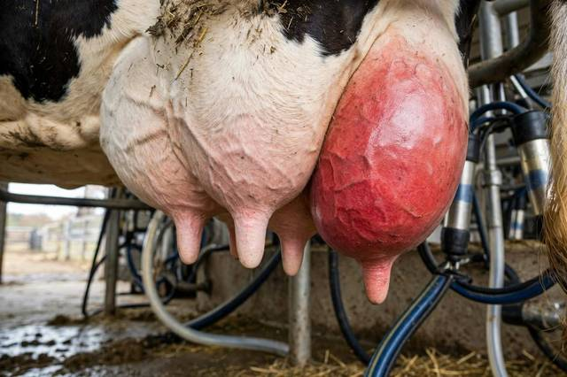
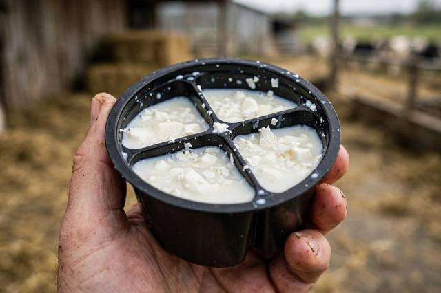
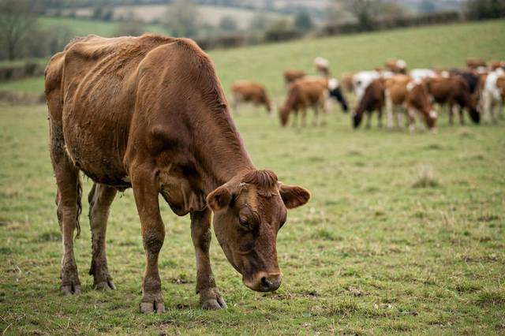
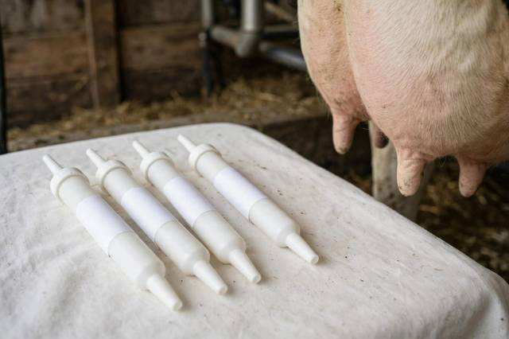

Mastitis is inflammation of the mammary gland, most often associated with bacterial infection. It can affect dairy cows and buffaloes, reduce milk yield and quality, cause discomfort, and increase treatment and replacement costs. It may be clinical, with visible changes in the udder or milk, or subclinical, where milk appears normal but inflammation is present.
On this page: clinical signs, causes and transmission, diagnosis, treatment principles and prevention.
🎥 Watch the Video
Watch our short VetCare World video on mastitis in cattle — symptoms, diagnosis and treatment, explained simply.
Swollen, hot, painful or firm quarter of the udder(One quarter of the udder is swollen, hot and painful)
2
Abnormal milk(Clots, flakes, watery milk or blood in the milk)
3
Fever(High body temperature)
4
Reduced appetite(Cow eats less or refuses feed)
5
Depression(Dull, listless and withdrawn)
6
Dehydration(Dry muzzle and sunken eyes in severe cases)
7
Reduced milk yield(Milk production drops sharply)

Swollen, hot quarter of the udder

Abnormal milk with clotsFeverReduced appetite

DepressionDehydrationReduced milk yield
Causes and Transmission
Mastitis is commonly associated with udder pathogens entering through the teat canal. Risk rises with poor milking hygiene, dirty or wet bedding, teat-end damage, faulty milking equipment, incomplete post-milking teat care and infected animals in the herd. Organisms and patterns vary by farm and region.
Pathogenesis
Mastitis begins when bacteria enter the udder through the teat canal, usually during or just after milking when the teat canal is open. The bacteria multiply in the milk inside the quarter and release toxins that damage the milk-producing tissue.
The cow's immune system responds by sending white blood cells into the udder, which raises the somatic cell count and causes the swelling, heat and pain of inflammation. Damaged secretory tissue produces less milk, and the milk becomes abnormal with clots and flakes. In severe cases toxins enter the bloodstream, causing fever, depression and life-threatening toxaemia.
Veterinary Diagnosis
A veterinarian assesses the animal, udder and milk. California Mastitis Test (CMT) can help screen for subclinical inflammation. Milk culture and antimicrobial susceptibility testing, where available, help identify pathogens and guide responsible treatment. A high somatic cell count can also indicate udder inflammation.
Differential Diagnosis
Several conditions can look similar. A veterinarian distinguishes them by the signs, history and laboratory findings:
Subclinical mastitis — raises the somatic cell count without visible udder or milk changes.
Teat injury or trauma — causes a swollen quarter without abnormal milk or fever.
Udder oedema — causes swelling around calving with normal milk and no fever.
Milk fever — causes a down cow after calving with a normal udder.
Treatment and Case Management
Treatment depends on the affected quarter, severity, likely pathogen, culture results, lactation status and local veterinary guidance. Severe systemic illness needs urgent veterinary attention and supportive care. Intramammary or systemic antimicrobials should only be selected by a veterinarian when indicated. Follow the product label and prescribed milk and meat withdrawal periods; never sell or consume milk during the withdrawal period.
Important: Seek urgent veterinary help if the animal has fever, severe depression, dehydration, cold extremities, inability to stand, or a rapidly worsening udder. Do not delay treatment of a systemically ill animal.
Recommended Medicines
1
Antibiotic – Intramammary antibiotic(Treats the infection inside the affected quarter)As prescribed by a veterinarian
2
Antibiotic – Oxytetracycline(Systemic antibiotic for severe or spreading infection)10–20 mg/kg IM or SC daily
3
NSAID – Meloxicam(Reduces pain, fever and udder inflammation)0.5 mg/kg IV/SC once
4
Fluid therapy – IV fluids(Rehydrates a severely ill, dehydrated cow)As prescribed by a veterinarian
⚠ Important Tips:
Use antibiotics only under veterinary advice.
Never sell or consume milk during the withdrawal period.
A cow with fever, severe depression or a rapidly worsening udder needs a vet urgently.
Culture results help the vet choose the right antibiotic.

Intramammary tubes — vet-prescribed onlyInjection — vet-administered onlyMedicines — only as prescribed by a veterinarian
Prevention and Farm Management
Keep teats and hands clean and dry during milking
Use clean, well-maintained milking equipment and correct milking technique
Provide clean, dry bedding and regularly remove manure
Apply an approved post-milking teat disinfectant
Identify and monitor high-cell-count or repeat clinical cases
Maintain milking order and isolate or milk infected animals last when advised
Key Takeaway
Early detection, hygienic milking, accurate diagnosis and responsible veterinary treatment are central to controlling mastitis.
Keep herd health records, consult a qualified veterinarian and follow the animal-health authority's current guidance for your region.
References
MSD Veterinary Manual. Merck & Co., Inc.
Radostits, O.M., Gay, C.C., Hinchcliff, K.W., Constable, P.D. Veterinary Medicine: A Textbook of the Diseases of Cattle, Horses, Sheep, Pigs and Goats.
FAO animal health manuals. Food and Agriculture Organization of the United Nations.
Frequently Asked Questions
What are the symptoms of mastitis in cows?
A swollen, hot, painful or firm quarter of the udder, and abnormal milk with clots, flakes, wateriness or blood. Severe cases show fever, reduced appetite, depression or dehydration, and milk yield falls.
What causes mastitis in dairy cows?
Mastitis is most often associated with bacterial infection, when udder pathogens enter through the teat canal. Risk rises with poor milking hygiene, dirty or wet bedding, teat-end damage, faulty milking equipment and infected animals in the herd.
How is mastitis in cattle diagnosed?
A veterinarian assesses the animal, udder and milk. The California Mastitis Test (CMT) can help screen for subclinical inflammation, and milk culture with antimicrobial susceptibility testing helps identify pathogens and guide treatment. A high somatic cell count can also indicate udder inflammation.
How is mastitis in cows treated?
Treatment depends on the affected quarter, severity, likely pathogen, culture results, lactation status and local veterinary guidance. Intramammary or systemic antimicrobials should only be selected by a veterinarian when indicated. Follow the prescribed milk and meat withdrawal periods.
How can mastitis in dairy cows be prevented?
Keep teats and hands clean and dry during milking, use clean well-maintained equipment, provide clean dry bedding, and apply an approved post-milking teat disinfectant. Identify and monitor high-cell-count or repeat clinical cases.
Which medicine is used for mastitis in cow?
Treatment depends on the affected quarter, severity, likely pathogen, culture results and lactation status. Intramammary or systemic antimicrobials should only be selected by a veterinarian when indicated, so never treat without veterinary advice.
Why is my cow milk clotted?
Clots, flakes, watery milk or blood in the milk are signs of mastitis, often with a swollen, hot or painful udder quarter. A veterinarian should assess the animal, and the California Mastitis Test and milk culture help guide treatment.
گائے میں سوزش حیوانہ (Mastitis) کا علاج کیا ہے؟
علاج تھن کی حالت، شدت اور دودھ کے ٹیسٹ پر منحصر ہوتا ہے۔ دوا صرف ویٹرنری ڈاکٹر تجویز کرتا ہے، اور دودھ کی ممانعت کی مدت کا خیال رکھنا ضروری ہے۔ تھنوں کی صفائی اور دودھ دوہنے کی صحیح عادت بچاؤ کا بہترین طریقہ ہے۔
✍️ Written by Dr. Shahid Bilal Depal, DVM (PVMC RVMP #15068)
This guide is for educational purposes. Consult a registered veterinarian for diagnosis and treatment.